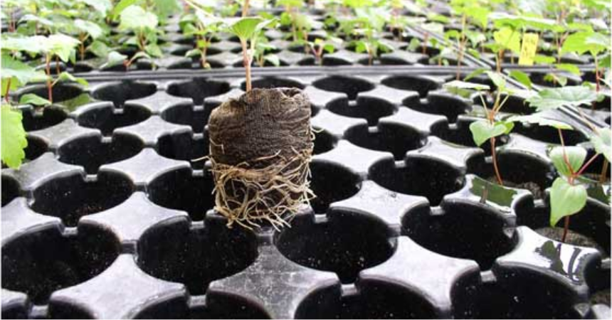
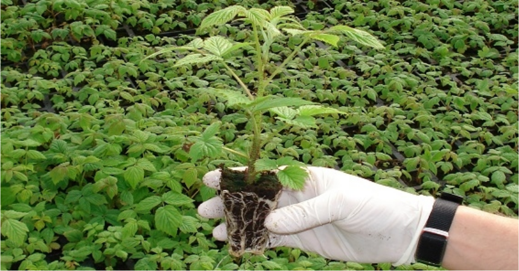
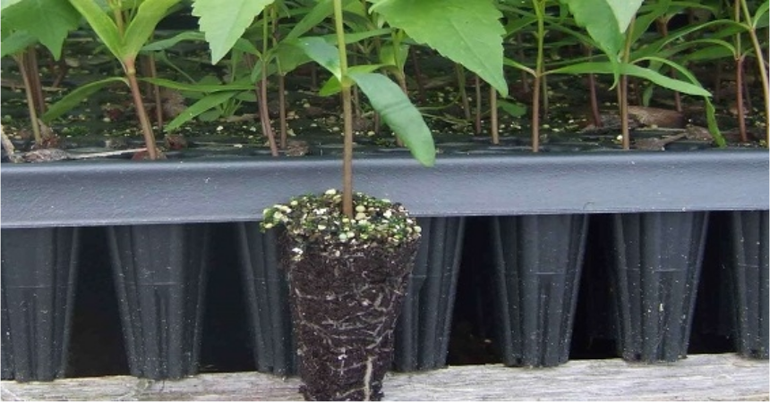
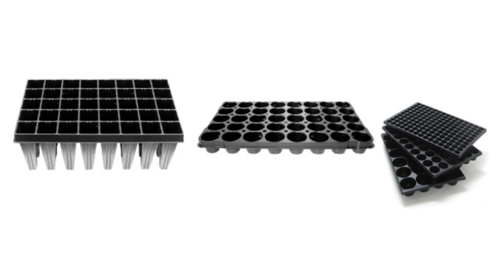

Seedling production is certainly one of the most important phases in the production cycle.
Quality seedlings or transplants largely determine rooting and acceptance, quality and quantity of yield, as well as the length of vegetation.
Simply put, good production of cultivated crops cannot be obtained from poor-quality seedlings.
Usually the first question is which containers are better, plastic or styrofoam. Each of them actually has its advantages and disadvantages, so when choosing, other criteria and production conditions should be taken into account.
One of the more important criteria should be the shape and size of the hole, where the depth of the container is particularly important, and the possibility of the easiest removal. The conical shape of the holes with optimal depth for each crop enables the best development of the root system, which means the fastest rooting in the field and especially much easier removal.
The shape of the container holes where the root system with the substrate is in the shape of a ball is not a good choice. Such a seedling needs several days of adaptation and root correction to its natural position.

Conical shape – properly developed root system
This German manufacturer is an undisputed leader in seedling production for professional production. They have gone a long way of development, improvement, and testing in cooperation with research centers and institutes.
The goal was and still remains how to get the fastest quality plant for the highest yields. The transition from a seedling in a container to a plant in the field must not be "painful".
Through its development, Herkuplast has created well-known container brands – models.
HERKUPAK model – 3-year use is intended for smaller series and QUICK POT model for large series of seedling production.
For sowing in containers with smaller or larger seeders, or sowing lines, we always recommend that samples of various sizes be tested before purchase to be completely sure of quality sowing.
| No. | Container Type | Purpose | Packaging |
|---|---|---|---|
| 1. | HPD 40/6R | Watermelon, melon, etc. | 50 |
| 2. | HPD 84/6R | Tomato, pepper, etc. | 50 |
| 3. | HPD 104/6R | Cabbages, etc. | 50 |
| 4. | HPD 160/5,5R | Lettuce | 50 |
| 5. | HPD 360/3,2 | For pricking out | 50 |

Conical shape – properly developed root system
| No. | Container Type | Purpose | Packaging |
|---|---|---|---|
| 1. | QPD 40/6R | Watermelon, melon, etc. | 25 |
| 2. | QPD 84/6R | Tomato, pepper, etc. | 25 |
| 3. | QPD 104/6R | Cabbages, etc. | 25 |
| 4. | QPD 160/5,5R | Lettuce | 25 |
| 5. | QPD 360/3,2 | For pricking out | 25 |
We recommend models HPD 40/6R or QPD 40/6R for the production of grafted or non-grafted watermelon seedlings, as they have proven to be the best solution.

For both models, base trays (plates) as well as plates for ejecting (removing) seedlings are available.
Copyright Nibon Pak All Rights Reserved. Development & SEO Web Vortex